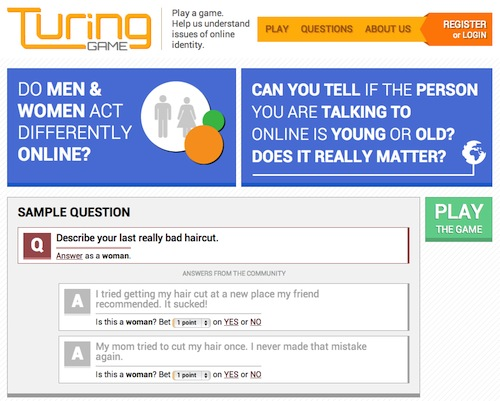

Tinkerer, Designer, Developer.
I'm a programmer and designer based in Atlanta, GA. I love building beautiful and responsive applications using the latest web technologies.
Email: georgeburdell@gatech.edu
Phone: 555-137-1467


Education
Georgia Institute of Technology
Fall 2013 - present
B.S. Computer Science, Information Internetworks and Media
Metropolitian Community College
Fall 2008 - Spring 2012
Associate Degree in Information Systems
Associate Degree in Computer Science
Skills
Technical
JavaScript, PHP 5, HTML5, CSS3, Java, C#, Jade, TypeScript, LESS, SCSS, Stylus, AngularJS, jQuery, Ionic Framework, Cordova, Node.js, ASP.NET MVC.
Design
Photoshop Illustrator, InDesign, Premier Pro, After Effects
Experience
Software Developer Intern, Tyler Technologies
Summer 2014
I made a RESTful API for a large Silverlight application with a C# back-end. I also worked on a responsive thin client written in HTML5/CSS/JavaScript which uses the aforementioned API. The core business logic was written in C#, with unit testing done in Jasmine and the MS Unit Testing Framework. The thin-client web app was written in TypeScript, AngularJS, jQuery, Bootstrap, and LESS.
Website Designer and Developer, Georgia Tech
2013-2014
I created a beautiful, engaging, and responsive website and user experience for a web-based project written in PHP. I also wrote a sophisticated PHP survey for a research study.
Computer and IT Coordinator, National Youth Science Foundation
Summer 2013
I coordinated and provided networking, computer access, and IT support services for a month-long, prestigious science camp. My responsibilities also included mentoring students, teaching, organizing, and overseeing classes.
Projects

LSM Hymnal
Beautiful hymnal reader for Android and the web.
A beautiful e-reader for the LSM hymnal with quick navigation features and a beautiful user interface. Bookmark your favorite hymns and customize the interface with full-screen, dark and light viewing modes.

Teleop Catalyst for ROBOTC
Programming has never been easier.
Tele-op Catalyst makes it stupidly easy to create robust teleop (remote control) programs for the FIRST Tech Challenge using a simple but powerful "click, command, create" workflow. With Catalyst, you can get your robot running in minutes, with little to no programming experience.

The Turing Game
Helping people explore issues of identity and stereotypes.
I overhauled the visual aesthetic and core user experience of a Georgia Tech research project, creating a beautiful and intuitive experience that people love using.

Team Up Next
Experience the awesome.
I produced a wide range of promotional and branding material for my robotics team in high school, including: the logo, banners, motion graphics, website theme, social media materials, Chairman's Video, Safety Animation Video, stationary, and more.
Leadership
Technical Director, GT Web Dev
I give talks on a variety of web development topics, ranging from the basics of HTML and CSS to advanced topics like building and consuming RESTful web services and making SPA apps. I'm also heavily involved in curriculum development and planning for each semester's talks and events.
Cadet Commander, Aircraft Maintenance and Manufacturing Academy
I lead and organized a national week-long, residential academy that taught participants about aircraft manufacturing and maintenance on the live production floor. I managed, coordinated, and organized transportation, scheduling, activities, housing, meals, paperwork, special guests, press releases, and a plethora of other logistical tasks. The academy was very successful and lead to an award.
Cadet Commander, Harry S. Truman Composite Squadron
I lead a squadron of cadets, organized cadet programs, maintained discipline and professionalism, and restructured the squadron to significantly increase engagement and boost attendance. I also co-developed the aerospace education curriculum (which included creating an interactive quiz application, lecture material, activities, handouts, and activities).
Team Image & Chairman's Team Leader, Up Next Robotics
I created the core branding for a robotics team, including everything from business cards, to snazzy video intros to a website theme, and produced a 3D animated safety video entered in a competition.
Honors & Awards
Tyler Tech - FedEx Day 2nd Place Winner
I developed a cross-platform, hybrid mobile application that leverages the powerful EnerGov RESTful API I worked on during the internship. I also developed an AngularJS directive that transforms tabular data into a fully responsive, touch friendly grid, complete with toggle controls and intelligent auto-switching based on screen size. Technologies used: JavaScript, AngularJS, Ionic Framework, Bootstrap, and LESS.
Preliminary acceptance to the SpaceX Internship Program
I was one of the 15 high school seniors selected in 2013 for SpaceX's inaugural internship program for FIRST FRC and FTC students.
Cadet Non-Commissioned Officer (NCO) of the Year Award
This award is given to only one cadet per year in Missouri who has demonstrated outstanding leadership and management skills, and has made profound and lasting contributions to the organization’s aerospace education and cadet programs.
Missouri Delegate - NYSC
I was one of two students in Missouri to be selected as a delegate for the National Youth Science Camp—an all-expenses paid, month-long, residential science camp that brings together the best and brightest minds from around the world.
Outstanding Student Award (Presidential Scholar)
This award is given to academically outstanding students who graduate with a perfect 4.0 GPA from the Metropolitan Community College in Kansas City, Missouri.